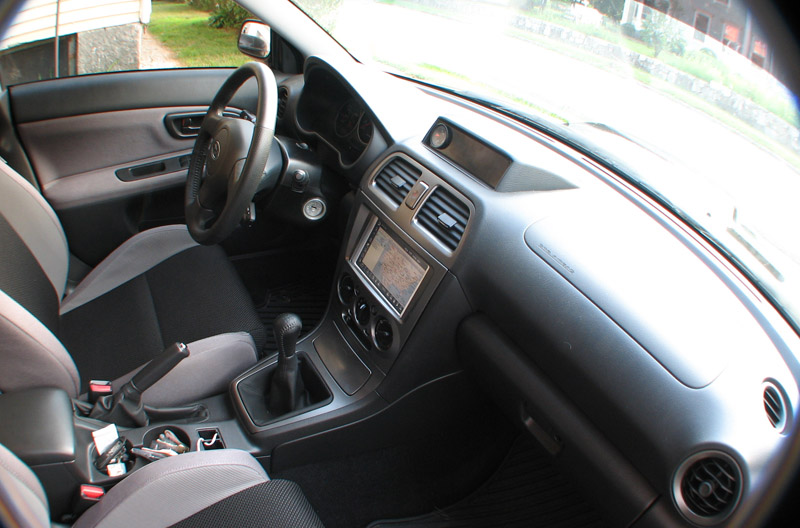
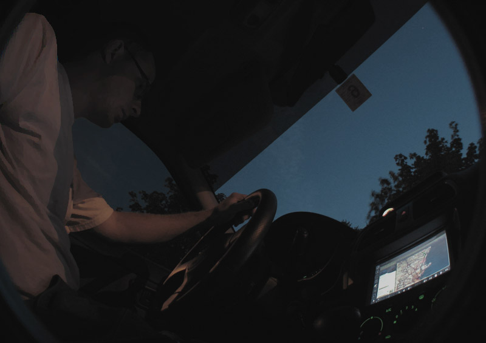
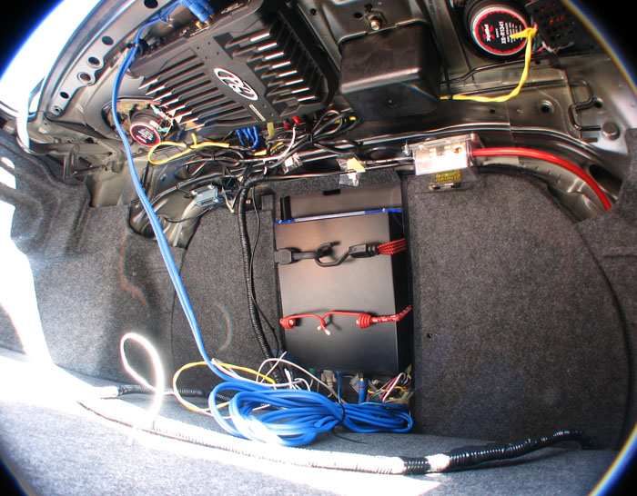
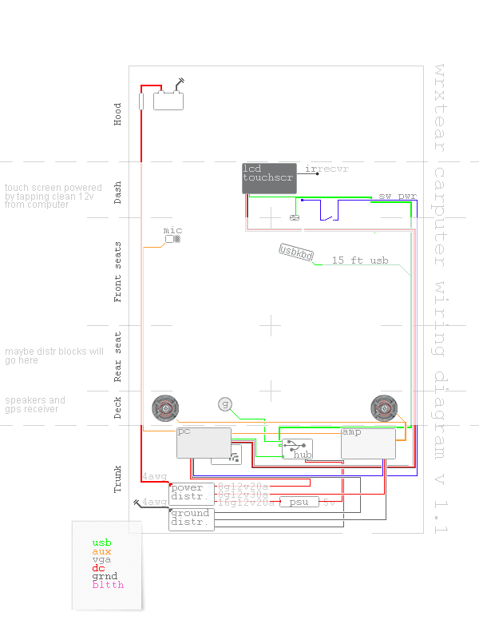
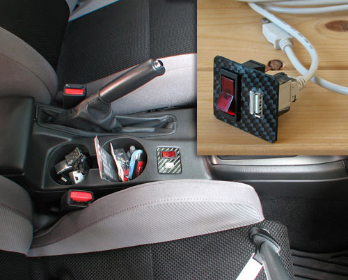
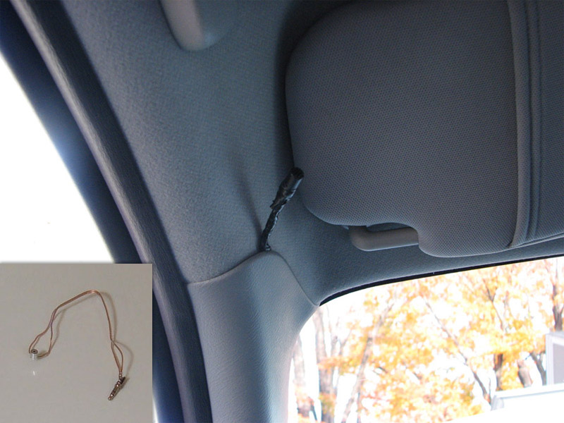
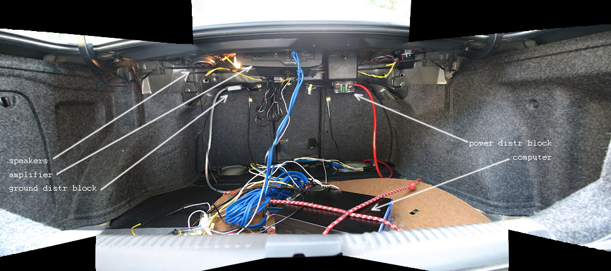
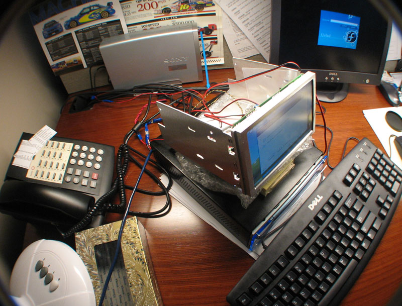
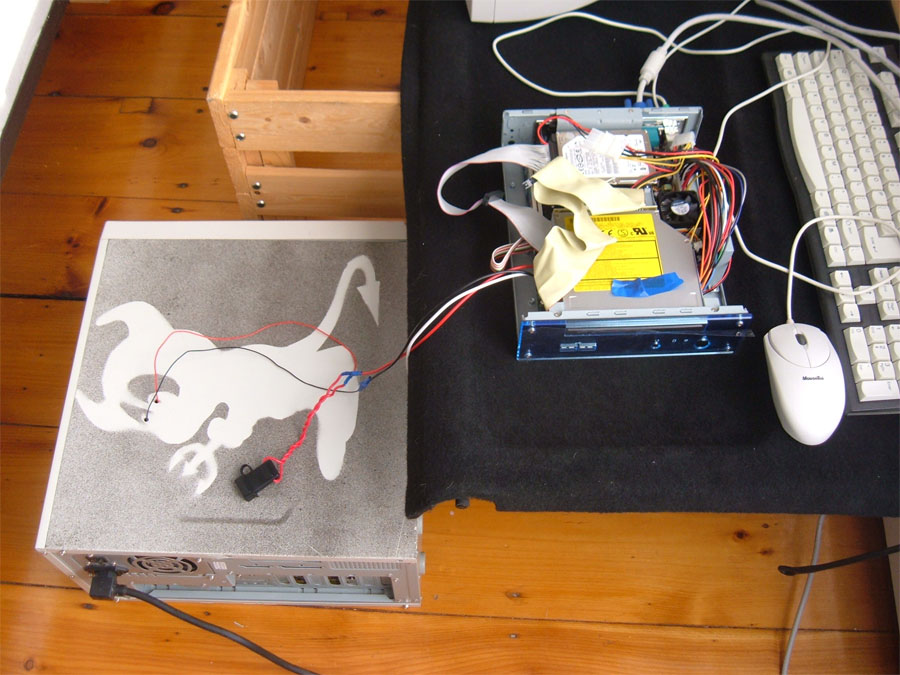

Automobile carputer that provides GPS Navigation, video and audio playback playback and on-board WiFi Internet connection.
www.f1vlad.com/wrxtear/carputer/

Finished project: a view from inside.

Night view.

This is final trunk setup, everything is secured, some wiring is exposed still for troubleshooting.

This is a global car computer diagram uncovering wiring and design logic.

Even though CD-ROM is available within easy reach, USB hub has proven to be the most efficient input device, molded into carbon fiber plate, next to the "master switch".

Microphone, for text recognition, has been stripped down and rewired, then mounted next to driver side visor.

First time start-up in the trunk, all wiring is exposed, nothing is secured.

First time test of LCD

Home testing/debugging mode, tapping onto 16v line on FreeBSD server